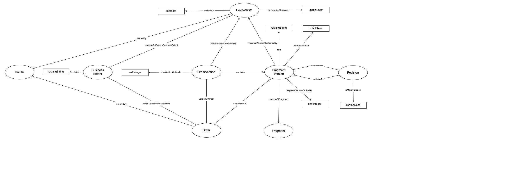

IRI: http://parliament.uk/ontologies/standing-order/BusinessExtent
IRI: http://parliament.uk/ontologies/standing-order/Fragment
IRI: http://parliament.uk/ontologies/standing-order/FragmentVersion
IRI: http://parliament.uk/ontologies/standing-order/House
IRI: http://parliament.uk/ontologies/standing-order/Order
IRI: http://parliament.uk/ontologies/standing-order/OrderVersion
IRI: http://parliament.uk/ontologies/standing-order/Revision
IRI: http://parliament.uk/ontologies/standing-order/RevisionSet
IRI: http://parliament.uk/ontologies/standing-order/SuspensionPeriod
IRI: http://parliament.uk/ontologies/standing-order/containedBy
IRI: http://parliament.uk/ontologies/standing-order/fragmentVersionContainedBy
IRI: http://parliament.uk/ontologies/standing-order/issuedBy
IRI: http://parliament.uk/ontologies/standing-order/orderCoversBusinessExtent
IRI: http://parliament.uk/ontologies/standing-order/orderVersionContainedBy
IRI: http://parliament.uk/ontologies/standing-order/orderedBy
IRI: http://parliament.uk/ontologies/standing-order/revisionFrom
IRI: http://parliament.uk/ontologies/standing-order/revisionSetCoversBusinessExtent
IRI: http://parliament.uk/ontologies/standing-order/revisionTo
IRI: http://parliament.uk/ontologies/standing-order/suspensionPeriodOfFragment
IRI: http://parliament.uk/ontologies/standing-order/suspensionPeriodOfOrder
IRI: http://parliament.uk/ontologies/standing-order/versionOfFragment
IRI: http://parliament.uk/ontologies/standing-order/versionOfOrder
IRI: http://parliament.uk/ontologies/standing-order/fragmentVersionOrdinality
IRI: http://parliament.uk/ontologies/standing-order/isMajorRevision
IRI: http://parliament.uk/ontologies/standing-order/number
IRI: http://parliament.uk/ontologies/standing-order/orderVersionOrdinality
IRI: http://parliament.uk/ontologies/standing-order/revisedOn
IRI: http://parliament.uk/ontologies/standing-order/revisionSetOrdinality
IRI: http://parliament.uk/ontologies/standing-order/text
This HTML document was obtained by processing the OWL ontology source code through LODE, Live OWL Documentation Environment, developed by Silvio Peroni.